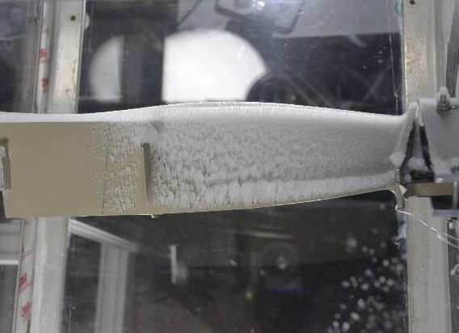

Principal Investigator · Icing experiments · the archive
Hui Hu
Anson Marston Distinguished Professor in Engineering and Martin C. Jischke Professor in Aerospace Engineering · Iowa State University
Has directed the ISU icing laboratory since 2006 and operates the ISU Icing Research Tunnel, studying aircraft and aero-engine icing physics and anti-/de-icing technology with advanced flow diagnostics. His experiments and UAV flight campaigns produced the archive at the core of FROST.
Leads in FROST
- Aim 1.1 Feature extraction and metadata
- Aim 1.2 Linkage and harmonization (co-lead)
- Aim 3.2 Governance and contribution